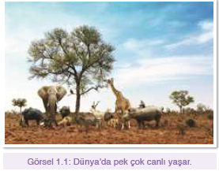
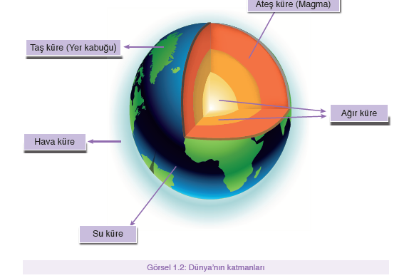
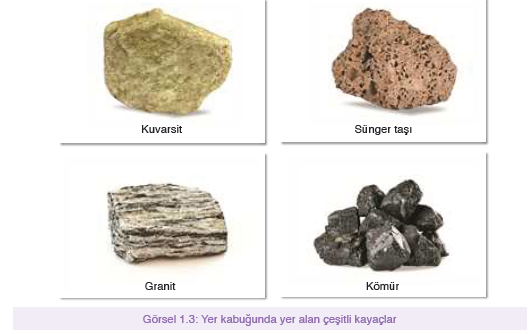
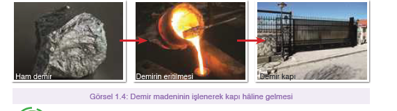
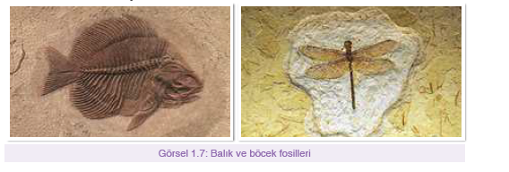
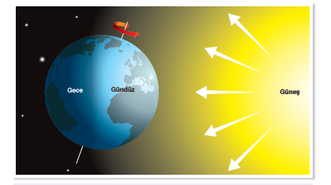
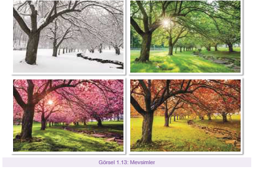

Üzerinde yaşadığımız Dünya, birçok canlıya ev sahipliği yapar. Bu canlılardan bazıları karada, bazıları suda yaşar. Her biri farklı özellikte ve yapıda olan canlılar için yaşam alanı olan Dünya’nın yapısını hiç merak ettiniz mi?
999 + 1 = 1000
Dünya’mızın; ağır küre, ateş küre, taş küre, su küre ve hava küre gibi çeşitli katmanlardan oluştuğunu daha önceki sınıflarda öğrenmiştik. Aşağıdaki görseli inceleyerek bunları hatırlayalım.
Üzerine bastığımız toprak, yer kabuğu adı verilen taş kürenin bir parçasıdır. Acaba yer kabuğunun yapısında başka neler vardır?
Çevremizdeki kara parçalarını incelediğimizde irili ufaklı taşlar gözlemleriz. Bunlar farklı şekil, sertlik ve renklerde olabilir. Gözlemlediğimiz bu taşlar mineral adı verilen çeşitli maddelerden oluşmuşlardır. Bir veya birden fazla mineralin bir araya gelerek doğal olarak oluşturduğu kütlelere kayaç adı verilir. Yer kabuğunun kara tabakası kayaçlardan oluşur. Kayaçlar içerdikleri minerallere göre sert ya da yumuşak olabilir.
Kayaçlar; rüzgâr, su, sıcaklık gibi etmenlerle parçalanarak toprağı meydana getirir. Toprak, çeşitli bitki ve hayvanların üzerinde yaşadığı bir ortamdır. Kayaçların içerdiği maddelere göre toprağın yapısı da değişebilir. Örneğin mineral miktarı ve çeşidi bakımından zengin olan topraklarda canlı çeşitliliği fazlayken az olan topraklarda daha az canlı çeşidi bulunur. Akarsu kıyılarında, dağlık arazilerde, sahillerde veya evimizin yakınlarında birbirinden farklı kayaçlar görmemizin nedeni bu kayaçların yapısının farklı olmasıdır.
Kayaçlar çeşitli özellikte olmaları sayesinde farklı amaçlar için kullanılabilir. Ekonomik değeri olan kayaçlara maden adı verilir.
Madenler, maden ocaklarında birtakım yöntemlerle yer kabuğundan çıkarılıp işlenerek ham madde olarak kullanılabilir. Bu sayede; altın madeninden bilezik, demirden kapı, bakırdan çeşitli kaplar üretilebilir.
Altın, gümüş, zümrüt gibi madenler oldukça değerlidir. Bu madenlerden süs eşyası yapımında sıkça yararlanılır. Granit, mermer ise sertlik ve dayanıklılıklarından dolayı mutfak tezgâhı yapımında ham madde olarak kullanılır.
Taş kömürü hem yakıt olarak hem otomotiv ve elektronik alanında kullanılan, linyit ise asfalt yapımında kullanılan bir ham maddedir.
Kayaçlar ve madenler ülkelerin ekonomik olarak kalkınmasında önemli rol oynar. Ham madde olarak kullanıldıkları için ticari açıdan büyük önem taşırlar. Ülkelerin kayaç ve maden bakımından zengin olması ve bunların işlenebilir durumda olması millî gelire büyük katkı sağlar.
Ülkemiz birçok kayaç ve maden çeşidi bakımından oldukça zengindir. Altın, bor, mermer, linyit, bakır, taş kömürü, gümüş ülkemizde bol miktarda bulunmaktadır. Muğla’nın Yatağan ilçesi linyit, Afyonkarahisar mermer, Zonguldak da taş kömürü yatakları bakımından zengindir. Dünya üzerinde bor rezervlerinde ülkemiz ilk sırada yer almaktadır. Eskişehir, Kütahya, Bursa gibi şehirlerimizde bor madeni çok miktarda bulunmaktadır. Otomobil, tıp, enerji, bilgisayar, cam gibi pek çok farklı alanda bor madeninden yararlanılmaktadır. Ayrıca plastik, inşaat, boya gibi alanlarda da bor madeninden yararlanılmaktadır. Ülkesini seven sorumluluk sahibi bireyler olarak bu doğal miraslara sahip çıkmalıyız.
Bir zamanlar yeryüzünde dinozor, mamut gibi canlıların yaşadığı bilim insanları tarafından açıklanmıştır. Acaba bilim insanları hiç görmedikleri hâlde dinozorların varlığını nasıl bilmektedir?
Yeryüzündeki canlılar, öldükten sonra deniz dibine ya da toprağa düşer. Zamanla bu canlı kalıntılarının yumuşak kısımları çürüyerek yok olur. Kemik, kabuk gibi sert kısımların üzeri ise çamur, kum ve çakıllarla kaplanır. Bu kısımlar zamanla toprak altında kalır ve sıkışarak sertleşir. Bazen de toprak altında değil buzulların içinde veya ağaçlardan salgılanan reçineler içinde kalarak sertleşir. Canlı kalıntılarının bu şekilde yıllar içinde taşlaşması sonucu fosil oluşur. Fosil oluşumu yüzlerce, binlerce hatta milyonlarca yıl sürebilir.
Fosiller incelenerek daha önce yaşamış canlı türleri belirlenebilir. Fosiller sayesinde bitki, hayvan, mantar ve kabuklu deniz canlıları hakkında birçok bilgi aydınlığa kavuşmaktadır. Bir canlının geçmişten günümüze kadar nasıl değişimler geçirdiği yine fosiller aracılığıyla anlaşılır.

İnsanlar dünya üzerinde hareket ederek birçok yere gidebilirler. Bazen yakın bazen
uzak mesafelere giderek yer değiştirebilirler. Sadece üzerinde yaşayan canlıların değil,
Dünya’nın kendisinin de hareket ettiğini, hep aynı yerde durmadığını biliyor
muydunuz?
Dünya’mızın dönme ve dolanma olmak üzere iki hareketi vardır. Dönme hareketi
Dünya’nın kendi etrafında bir kez dönmesi olayıdır. Bu olay batıdan doğuya doğru
gerçekleşir. Dolanma hareketi ise Dünya’nın Güneş etrafındaki yörüngesinde bir tur
dolanması olayıdır. Dünya’mız aynı anda hem dönme hem dolanma hareketi yapar.
Ancak bu hareketlerin tamamlanma süreleri farklıdır. Bu iki olayın sonuçları da
farklıdır.
Örneğin Güneş’i gün içinde farklı yerlerde görmemiz, gece ve gündüzün oluşması
Dünya’nın dönme hareketinin bir sonucudur. Mevsimlerin oluşumu ise dolanma hareketi
ile ilgilidir. Şimdi dönme ve dolanma hareketlerini ve bunların sonuçlarını yakından
inceleyelim.
Dünya kendi etrafında belirli bir yörüngede ve belli bir hızla dönmektedir. Bunun
sonucunda Dünya’nın bir tarafı Güneş’e bakarken diğer tarafı Güneş’i göremez. Bu
durumu daha iyi kavrayabilmek için bir etkinlik yapalım.
Dünya’mız kendi ekseni etrafında dönmektedir. Bu hareket sırasında Güneş’i gören kısımda gündüz, göremeyen kısımda ise gece yaşanır. Böylece, dönme hareketi sonucunda gece ve gündüz oluşur. Yaptığımız etkinlikte fener, Güneş’i temsil etmektedir. Fenerin aydınlattığı kısımlar, Dünya üzerindeki gündüz saatlerinin yaşandığı bölgeleri göstermektedir. Karanlıkta kalan kısımlar ise gecenin yaşandığı bölgeleri temsil etmektedir
Dünya’nın kendi etrafındaki dönüşü 24 saatte tamamlanır.
Bu süre, bir gün olarak kabul edilir. Günlük
hayatımızda birçok işimizi günün saatlerine göre ayarlayarak
yaparız.
Bir gün içerisindeki gece ve gündüz süreleri,
Dünya’nın bölgelerine göre farklılık gösterebilir. Bazı
bölgelerde geceler daha uzun, bazılarında ise daha
kısadır.
Dünya’nın en büyük ısı ve ışık kaynağının Güneş
olduğunu biliyoruz. Bu nedenle Dünya’nın
dönme hareketi sırasında Güneş görmeyen
yani gece olan kısımları gündüze göre daha soğuk
olur. Gündüz, Güneş görüldüğü için tekrar
sıcaklık artar. Böylece gece ve gündüz arasında
sıcaklık farkı oluşmuş olur.
Dünya dönerken Güneş’in konumu gün içerisinde
değişir. Bunun sonucunda Güneş ışınları
Dünya’ya farklı açılarda gelir. Gün içerisinde gölge
boylarının değişkenlik göstermesinin nedeni
budur. Öğle saatlerinde Güneş tam tepede olduğu
için gölge boyu kısa, ikindi vakti Güneş batarken
gölge boyu daha uzundur. Eski zamanlardan
bu yana gölge boyu ölçülerek saat tahminleri yapılabilmektedir.
Güneş saatleri, bu özellikten yararlanılarak
kullanılan bir alettir.
Dünya üzerinde nerede olursak olalım Güneş
hep aynı taraftan doğar. Çünkü Dünya, hep aynı
yöne doğru dönmektedir. Dünya’nın bu özelliği
sayesinde, yönler ortaya çıkmıştır. Güneş’in doğduğu
yön daima doğu, battığı yön ise daima batıyı
gösterir. Yeryüzünde yön kavramları sayesinde
gidilecek yollar daha kolay belirlenebilmektedir
Sağ kolumuzu Güneş’in doğduğu yöne doğru
uzattığımızda, sağ kolumuzun olduğu yön doğuyu,
sol kolumuzun olduğu yön batıyı, önümüz
kuzeyi arkamız ise güneyi gösterir.
Dünya’mızın hareketi sadece kendi etrafında dönmesiyle sınırlı değildir. Dünya, kendi etrafında dönerken bir taraftan da Güneş’in etrafında dolanır. Bu sırada elips şeklinde bir yörünge izler. Aşağıdaki etkinliği yaparak Dünya’nın Güneş etrafındaki dolanımının nasıl gerçekleştiğini açıklayalım.
İlkbahar, yaz, sonbahar ve kış olmak üzere 4 mevsim olduğunu biliyoruz. Birbirinden farklı özelliklere sahip bu mevsimlerin Dünya’nın hareketiyle nasıl bir ilişkisi olabilir?
Dünya’nın Güneş etrafındaki dolanımı 365 gün 6 saatte tamamlanır. Bu süre 1 yıl olarak adlandırılır. Dünya bu yörüngede ilerlerken bazen Güneş’e yaklaşır bazen de Güneş’ten uzaklaşır. Bu sırada Güneş ışınları Dünya’nın farklı bölgelerine farklı zamanlarda farklı açılarla gelmektedir. Bu durum gölge uzunluğu ve sıcaklığın farklı olmasına neden olur. Yaptığımız etkinlikte Dünya’yı temsil eden portakalın, Güneş’i temsil eden mum etrafında çizdiği yörüngeyi gözlemledik. Buradan yola çıkarak portakalın muma yaklaştığı zamanın, Dünya’nın Güneş’e yaklaştığı zaman olduğu sonucuna ulaşabiliriz.
Dünya’nın Güneş etrafındaki dolanımının sonuçlarından biri de mevsimlerin oluşumudur. Mevsim değişikliklerinde hava sıcaklığı ve yağış miktarı değişebilir. Bunun sonucunda topraktan farklı ürünler elde edilir ve besin çeşitliliği artar. Portakal, limon gibi besinler kışın daha çok üretilirken üzüm, domates gibi besinler yaz aylarında daha çok üretilir
1. Ünitenin Sonu